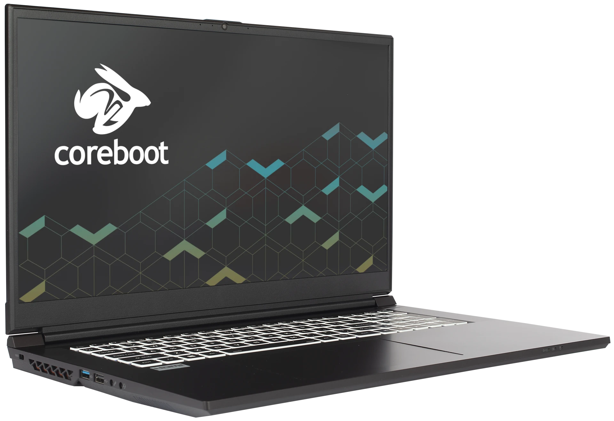

Gazelle (gaze17)

The System76 Gazelle is a laptop with the following specifications:
- CPU
- Supports Intel Alder Lake CPUs
- Chipset
- BIOS
- Macronix MX25L25673G flash chip
- WSON-8 form factor
- Programmed with System76 Open Firmware
- Macronix MX25L25673G flash chip
- EC
- ITE IT5570E
- Programmed with System76 EC
- Graphics
- Dedicated GPU options:
- NVIDIA GeForce RTX 3060
- TGP: 60W
- NVIDIA GeForce RTX 3050 Ti
- TGP: 60W
- NVIDIA GeForce RTX 3050
- TGP: 60W
- NVIDIA GeForce RTX 3060
- Integrated GPU:
- Intel Iris Xe Graphics
- eDP display:
- 17.3" 1920x1080@144Hz LCD
- LCD panel: AUO B173HAN04.9 (or equivalent)
- 15.6" 1920x1080@144Hz LCD
- LCD panel: Panda LM156LF-2F01 (or equivalent)
- 17.3" 1920x1080@144Hz LCD
- External video output:
- RTX 3060 model:
- 1x HDMI
- 1x Mini DisplayPort 1.4
- 1x DisplayPort 1.4 over USB-C
- RTX 3050 Ti and 3050 models:
- 1x HDMI
- 1x Mini DisplayPort 1.4
- RTX 3060 model:
- Dedicated GPU options:
- Memory
- Up to 64GB (2x32GB) dual-channel DDR4 SO-DIMMs @ 3200 MHz
- Networking
- Gigabit Ethernet
- Realtek RTL8111H
- M.2 PCIe/CNVi WiFi/Bluetooth
- Intel Wi-Fi 6 AX200/AX201
- Gigabit Ethernet
- Power
- RTX 3060 model:
- 180W DC-in port
- Barrel size: 5.5mm (outer), 2.5mm (inner)
- Included AC adapter: LiteOn PA-1181-76
- AC power cord type: IEC C5
- 180W DC-in port
- RTX 3050 Ti and 3050 models:
- 150W DC-in port
- Barrel size: 5.5mm (outer), 2.5mm (inner)
- Included AC adapter: Chicony A18-150P1A
- AC power cord type: IEC C5
- This model of AC adapter is known to be available with multiple barrel sizes; check the barrel size before purchasing from third parties
- Alternative compatible AC adapter: Chicony A17-150P2A
- 150W DC-in port
- 54Wh 4-cell battery
- Model number: NP50BAT-4-54
- RTX 3060 model:
- Sound
- Internal speakers & microphone
- Combined headphone & microphone 3.5mm jack
- Dedicated microphone 3.5mm jack
- USB-C DisplayPort, HDMI, Mini DisplayPort audio
- Storage
- 1x M.2 (PCIe NVMe Gen 4)
- 1x M.2 (PCIe NVMe Gen 3 or SATA)
- MicroSD card reader
- USB
- RTX 3060 model:
- 1x USB Type-C with Thunderbolt 4
- Supports DisplayPort over USB-C
- Does not support USB-C charging (USB-PD)
- 1x USB 3.2 Gen 2 Type-C
- Does not support DisplayPort over USB-C, USB-C charging (USB-PD), or Thunderbolt
- 1x USB 3.2 Gen 2 Type-A
- 1x USB 2.0 Type-A
- 1x USB Type-C with Thunderbolt 4
- RTX 3050 Ti and 3050 models:
- 2x USB 3.2 Gen 2 Type-C
- Does not support DisplayPort over USB-C, USB-C charging (USB-PD), or Thunderbolt
- 1x USB 3.2 Gen 2 Type-A
- 1x USB 2.0 Type-A
- 2x USB 3.2 Gen 2 Type-C
- RTX 3060 model:
- Dimensions
- 15": 35.95cm x 23.8cm x 2.39cm, 2.05kg
- 17": 39.7cm x 26.213cm x 2.489cm, 2.5kg